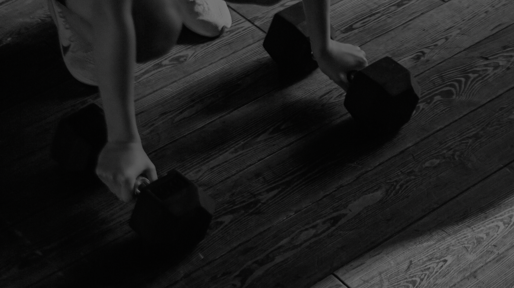
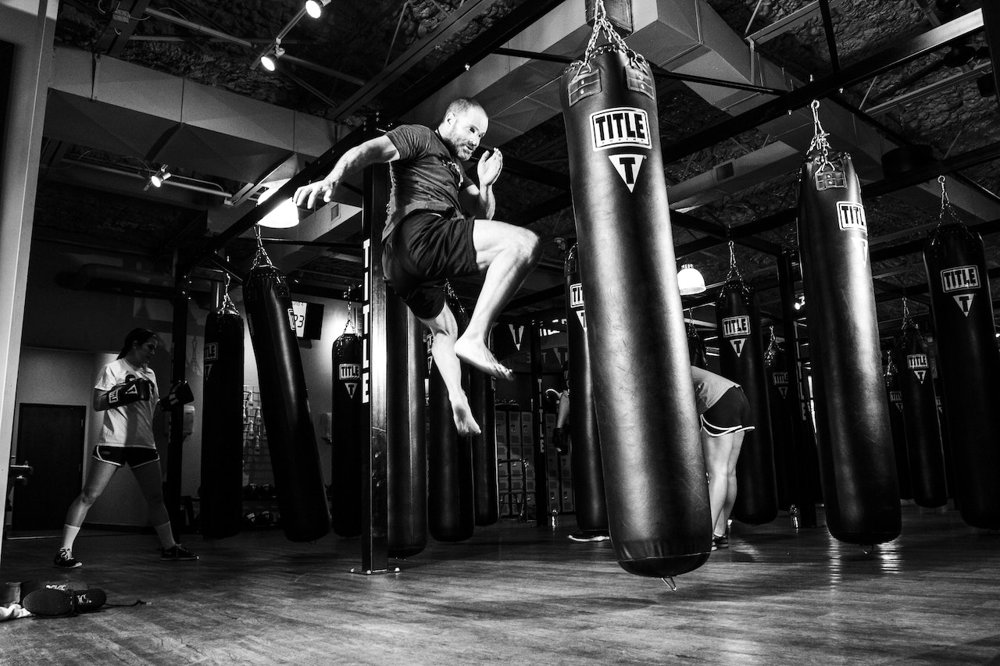

Um músculo é um tecido biológico que é capaz de se contrair e gerar força através de movimentos.
BENEFÍCIOS DA MUSCULAÇÃO
Além de te deixar com um físico atlético, a prática da músculação melhora a sua saúde óssea, saúde cardiovascular e outras.

OUTRAS FORMAS DE OBTER MÚSCULOS
Há também outras formas de obter músculos além da musculação, como por exemplo a luta pode ser uma excelente maneira de desenvolver e fortalecer a musculatura.

QUIZ
Faça agora o Quiz para saber quanto você conhece sobre os músculos!